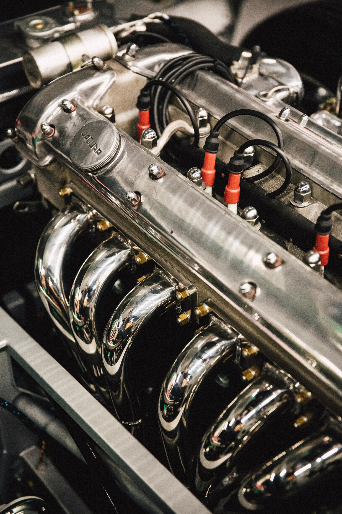

Vom Befund bis zur Revision
Bei Buchinger Youngtimertechnik reichen die Arbeiten an Motoren von der Diagnose einzelner Probleme bis zur Komplettrevision. Rumpfmotoren werden ebenso berücksichtigt wie umfassende Motorprojekte.
- Fundierte Diagnose und Schadensanalyse
- Vermessung relevanter Bauteile
- Komplettrevision nach Befund und Abstimmung
- Dokumentation der ausgeführten Arbeiten
Der genaue Arbeitsumfang richtet sich nach dem Zustand des Motors. Für eine erste Einschätzung helfen Fahrzeugmodell, Baujahr und eine kurze Beschreibung des Problems.